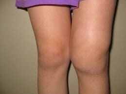
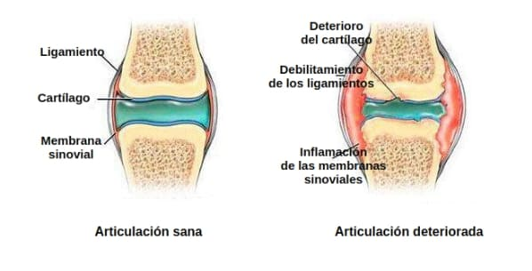

"Los métodos de tratamiento de las articulaciones que se implican en
España no parecen nada
convenientes". El famoso reumatólogo japones dio una entrevista franca a
la edición española
El Dr. Shigeaki Hinohara es el jefe del mundialmente famoso Centro
de Reumatología y Neurología de
Tokio
Hay sólo una causa de enfermedades de las articulaciones, pero
está completamente ignorada por los
médicos españoles.
Dr. Shigeaki Hinohara: "En España las enfermedades de las
articulaciones todavía se tratan con
medicamentos anticuados y poco eficaces que requieren un uso
constante durante toda la vida. Mientras
que en Japón las articulaciones se tratan tan fácilmente como un
catarro."
El año pasado Shigeaki Hinohara viajó a España para examinar la
experiencia de sus colegas españoles. Lo
que vio en España, según él, no se puede explicar. En nuestro país,
según Shigeaki, la reumatología se
paró en su desarrollo a nivel de mediados del siglo pasado.
Después de dar unas entrevistas en Japón, el Dr. Shigeaki Hinohara
dio su consentimiento para una
entrevista a nuestra edición española. ¿Qué cosas no le gustaron al
famoso médico en la medicina
española? ¿Y por qué afirma que los españoles que sufren de
articulaciones enfermas nunca podrán
curarse?
Hablando ante los periodistas japones, Usted dijo que lo que
había visto en España le había dejado en
shock. ¿Podría comentarlo?
Ante todo quiero decir que me gusta mucho España, su cultura y sus
ciudadanos. Pero el estado de la
medicina acá realmente deja en shock a los médicos japones. Su
medicina retrasa como mínimo 20, o tal
vez 30 años. Por lo menos, en lo que toca al tratamiento de
enfermedades articulares y del aparato
locomotor. Se puede decir que la reumatología no existe como una
ciencia en España.
Mire lo que los médicos sugieren para tratar las articulaciones en
España: Viprosal, Ibuprofeno,
Voltaren, Fastum Gel, Diclofenac, Theraflex, Nurofen y otros
medicamentos similares.
Sin embargo, estos medicamentos NO TRATAN LAS ARTICULACIONES Y LOS
CARTÍLAGOS, solo alivian los síntomas
de la enfermedad: dolor, inflamación, hinchazón. Ahora imagine lo
que está sucediendo en el cuerpo.
Cuando uno toma una pastilla, aplica un gel anestésico o hace una
inyección, el dolor se pasa. Pero una
vez que el remedio deja de funcionar, el dolor vuelve
inmediatamente.
Y el dolor es una señal importante, señala que una articulación
tiene un proceso patológico. Simplemente
aliviando el dolor, las articulaciones afectadas sufren un mayor
impacto. El proceso de destrucción se
acelera de 3 a 5 veces y al final conduce a unos cambios
irreversibles, inmovilización completa y
discapacidad.
Esta forma de eliminar el dolor en las articulaciones no se utiliza
en Japón ya durante más de 20 años.
Los remedios contra el dolor se usan solo en casos extremos, muy
raramente y con mucho cuidado. En
Japón, se venden solo con recetas y bajo estricto control médico.
Los llamados "hondroprotectores" están prohibidos por completo como
medicamentos absolutamente
fraudulentos e inútiles.
¡Sus médicos y farmacéuticos simplemente mutilarán a la gente! Está
claro que es mucho más beneficioso
vender constantemente a altos precios unos remedios para eliminar
los síntomas que curar la enfermedad
para siempre, recuperar la articulación afectada, ¡pero es horrible!

¿Y cómo en Japón van las cosas con el tratamiento de las
articulaciones?
Todos los médicos japones, desde los catedráticos-reumatólogos hasta
los médicos de cabecera ordinarios y
los paramédicos, entendieron hace mucho que no es necesario eliminar
los efectos de la enfermedad, sino
sus causas. Es la garantía de una curación completa, rápida y
segura. ¿Cuál es la causa principal de
lesiones en las articulaciones? Es la deposición de cristales en las
articulaciones debido a un
trastorno de la circulación sanguínea y del líquido sinovial.
Los uratos son sales de ácido úrico que causan la gota.
Los osteofitos, las sales calcinadas, son la causa del 97% restante
de las enfermedades articulares y de
la columna vertebral. Que son todo tipo de artritis y artrosis,
osteocondrosis, osteoporosis,
reumatismo, bursitis e incluso higroma. Todas estas enfermedades
tienen una causa: deposición de
osteofitos.
Las sales, deponiéndose en las superficies de la articulación,
actúan como si el papel de lija afilara
los tejidos circundantes - los huesos y el cartílago. Creciendo, los
cristales de sales comienzan a
traumatizar el tejido muscular, los tendones, los vasos sanguíneos y
los capilares. Causando la
inflamación, infección, hinchazón y dolor severo.
En casos descuidados, los grandes cúmulos de estas sales pueden
romper fácilmente una parte del hueso con
un movimiento brusco, causando así una incapacidad total y
inmovilizando para siempre la articulación.
Una idea errónea y muy peligrosa es que el calcio es útil para las
articulaciones. Sí, el calcio es útil,
pero solo para las articulaciones SANAS. Cuando las articulaciones
ya duelen o castañetean, significa
que ya se ha formado una capa de osteofitos, y el calcio, además de
fortalecer el tejido óseo, también
fortalece estas sales-osteofitos, agravando y acelerando su
crecimiento.
Por eso los reumatólogos japones recuperan ante todo la circulación
sanguínea en la articulación
afectada, de modo que se eliminen las sales acumuladas durante años.
Esto, a su vez, recupera la
circulación normal del líquido sinovial y comienza el proceso de
reparación de los tejidos de la
articulación.

De hecho, las articulaciones humanas son muy regenerativas, son
capaces de recuperarse por sí mismas,
como una cola de lagarto. Sólo necesitan un poco de ayuda en esto -
para liberarse de sales "pegadas" en
ellas - y el proceso se pondrá en marcha.
En los 90 del siglo pasado, los científicos suizos lograron
descubrir un compuesto específico responsable de la salud de las
articulaciones. La glucosamina es una sustancia que proporciona el
crecimiento activo de los cuernos de un animal. Es decir, su tarea
principal es crear un nuevo tejido óseo. ¿Te imaginas el poder
biológico de un mecanismo similar? Hasta ahora, no hay nada más
efectivo para activar la circulación sanguínea en los huesos y las
articulaciones.
Esta sustancia es capaz de penetrar en el interior de las moléculas
de sales y rasgarlas desde el
interior – como resultado se limpia la superficie de las
articulaciones, se recupera el flujo sanguíneo
y la circulación del líquido sinovial. ¡PARA SIEMPRE! Más
precisamente, hasta que las sales se acumulen
de nuevo (pero esto requerirá varias decenas de años). Ya no es
necesario TOMAR CONSTANTEMENTE los
medicamentos para aliviar el dolor y la inflamación. No hay que
tener miedo de que una vez la
articulación sea "paralizada" para siempre, quedándose completamente
sin movilidad y necesitando
prótesis. Las personas se hacen completamente sanas para decenas de
años.
Cuando vi las estadísticas médicas de España, me asusté. ¿Sabe cuál
es la causa más frecuente de
discapacidad en España? ¡No es cáncer ni SIDA ni diabetes, es
artrosis! ¡La artrosis más simple que en
Japón se trata en 2 o 3 semanas con el medicamento bastante
económico, en España conduce a la
discapacidad!
En Japón hoy en día, las enfermedades articulares no se consideran
patologías peligrosas, a menos que,
por supuesto, se trate de daños traumáticos graves: fracturas,
fisuras etc. El dolor y la inflamación en
las articulaciones solo indican que estas "están contaminadas" con
sales y es hora de limpiarlas.
Después de un curso mensual de "limpieza", las articulaciones se
vuelven en norma y se puede olvidar de
estos problemas para toda la próxima década.
Las enfermedades articulares que en España están tratando de
"tratar" por separado, en Japón ya están
unidas desde hace mucho en una sola enfermedad "Deposita salis"
(deposiciones de sales en las
articulaciones). Esta enfermedad incluye:
- Gota;
- Artritis;
- Artrosis;
- Osteocondrosis;
- Reumatismo;
- Osteoporosis;
- Bursitis;
- Sinovitis;
- Higroma.
Esta es una lista muy breve, pero el resto de las enfermedades son
solo una subespecie de estas nueve
patologías principales. Por ejemplo, la coxartrosis es una
subespecie de la artrosis, etc.
Y toda esta larga lista de enfermedades se cura con una limpieza muy
simple y banal de las
articulaciones. Es absolutamente segura, ni siquiera requiere
atención médica y se lleva a cabo en casa.
¿Cómo "limpian" las articulaciones en Japón?
Hoy en día existen remedios especiales que están diseñados para
limpiar las articulaciones de las deposiciones de sal. Contienen
alfa-artroferol. Por ejemplo, un remedio muy bueno es .
Todos ellos contienen glucosamina. La glucosamina mejora el
metabolismo del cartílago y proporciona lubricación para una función
articular sana. También participa en los procesos de mineralización
ósea y regula el equilibrio del calcio. Estas propiedades son clave
cuando se trata de articulaciones. Un buen remedio es .
Contiene glucosamina en una forma especial y fácilmente digerible,
por lo que el remedio tiene una mayor eficacia.
contiene un complejo de componentes destinados a mejorar el
funcionamiento de los tejidos articulares. Es decir,
tiene un efecto curativo integral para el tejido óseo y
cartilaginoso, líquido sinovial, fibras
musculares, tejidos de los ligamentos y tendones. Tiene un efecto
complejo y completo, es una crema increíble.
Estos son solo algunos de los componentes de :
Aceite de hígado de tiburón: alivia el dolor, alivia la
hinchazón, activa la formación de tejido cartilaginoso sano para
reemplazar el dañado. Mejora los procesos metabólicos en los tejidos
del cartílago.
Glucosamina: mejora el metabolismo del cartílago, promueve la
regeneración del tejido cartilaginoso dañado, restaura la movilidad
articular.
Colágeno: mejora la elasticidad y la extensibilidad de los
ligamentos, aumenta la resistencia de los huesos, así como la
elasticidad y el tono de la piel. Previene enfermedades
degenerativas de las articulaciones.
Chitosan: repone la necesidad de las articulaciones en
glucosamina, el material de construcción de los tejidos conectivos,
así como fluidos viscosos que proporcionan la hidratación de las
estructuras de los tejidos.
Condroitina: fortalece los cartílagos, tendones, ligamentos,
alivia la inflamación y la hinchazón, promueve la regeneración
activa del cartílago.
Por lo que sabemos, no se vende en las farmacias
españolas.
Exactamente, que no. Los médicos españoles prefieren prescribir a la
población los anestésicos y
hondroprotectores en una cantidad enorme en lugar de practicar el
tratamiento real.
Sin lugar a dudas, los reumatólogos españoles, al menos aquellos que
están interesados en los
tratamientos progresivos, conocen y sus capacidades para
recuperación. Pero no se arriesgan a
recetar un remedio que no está en la lista del Ministerio de Salud.
Por lo que yo sepa, el fabricante del quería entrar en el
mercado español. Pero no le permitieron
hacerlo inventando cientos de obstáculos (la burocracia en España no
tiene límites). Se puede
comprenderlo: si este remedio aparece en las farmacias, las
farmacias españolas sufrirán enormes
pérdidas. ¡Es que la farmacología hoy es un negocio! Incluso en
Japón. Pero en Japón el negocio está
controlado por el estado, y no voy a juzgar lo que está sucediendo
en España, Ustedes lo sabrán mejor.
¿Qué aconsejaría a los españoles con articulaciones
afectadas?
La gente corriente, especialmente la que tiene más de 50, sufre del
retraso de la medicina más que otros.
No es su culpa, es sólo el sistema de sanidad.
Llevamos tres meses distribuyendo . Esta oportunidad ya la
aprovecharon varios miles de españoles.
Les pedimos a todos los que recibieron que evalúen la
eficacia del medicamento en una escala de
1 a 10. Por el momento, más de 3.000 personas participaron en la
encuesta y la evaluación promedia del
medicamento es 9.97 de 10.
Como puede ver a ayudado a muchas personas que padecen de
problemas articulares , es un producto
muy eficaz que pude obtenerlo hoy , con el descuento que le favorese
comprarlo mas barato .
¿Cuánto tiempo durará la distribución preferencial de esta crema
fantástica?
Hasta que termine el lote dedicado. Pero quiero advertirles que ya
quedan pocas unidades. Hay más pedidos
con cada día. Funciona el método de "boca a boca", la gente
transmite la información entre sí, aconseja
a los amigos, pide una droga para los familiares. No esperábamos que
la información sobre se
distribuyera tan rápido por toda la España.
Vendemos los últimos paquetes de con un impresionante
descuento de %. Recomiendo a cualquier persona con problemas en
las articulaciones que pida ahora mismo, mientras
todavía está disponible y con descuento. Para pedir rellene el
siguiente formulario:

Marina Sánchez García
Dr. Shigeaki, le estoy muy agradecida por este producto. He estado buscando algo como esto durante mucho tiempo. ¡Tengo muchas ganas de que llegue mi paquete! ¡Gracias!María Martínez López
¡He curado mi artrosis gracias a su una droga! ¡Muchísimas gracias!Soraya Moliner Sánchez
¡Estoy completamente encantada! ¡Es un producto eficaz para problemas articulares! Mis codos y rodillas han dejado de doler.Andrés Gil Mendoza
¡Gracias por estе remedio, Dr. Shigeaki! No solo salvó a su esposa sino que también a muchas personas de nuestro país. He decidido probar para la columna vertebral. Tengo osteocondrosis y realmente me ha ayudado. ¡Creo que ahora todo estará bien!Shigeaki Hinohara
Andrés, no te preocupes y sigue usando . No te olvides de seguir las instrucciones de uso de estе crema.Saludos, Shigeaki.
Ángel Corral Vega
¿Alguien me puede ayudar? Estoy harto del dolor de espalda. Me agota muchísimo. Ya no sé qué hacer. Tomo todo tipo de pastillas, me aplico diversos geles de vez en cuando, pero no ayuda nada :(Carlos Pérez Navarro
Ángel, cómprate y no te arrepentirás. Yo también tuve problemas articulares hasta tal punto que no podía caminar. Menos mal que mi madre encontró este crema y me lo dio. Lo compró hace 6 meses por el precio original (de todos modos, me parece que no era tan alto). Y, ahora, no tengo ningún problema con mis articulaciones. Puedo moverme normalmente. Créeme, ¡es genial! Te pondrás bien y, además, podrás llevártelo con un % de descuento.Natalia Martínez Hernández
¿Cómo puedo pedir un crema ?Juan Hinojosa Díaz
Natalia, este es el formulario de solicitud oficial del fabricante, pero te aconsejo que te des prisa si quieres llevártelo con un % de descuento. A mí me ayudó mucho.Natalia Martínez Hernández
Gracias, Juan. Acabo de pedirlo. ¿Cuánto tardará en llegar?Juan Hinojosa Díaz
Natalia, unos 3 días :)Irene Picazo Ortega
Pedí este crema hace dos meses para mi hermana que había estado sufriendo artritis durante mucho tiempo. Me dio las gracias después de usarlo. Simplemente me arriesgué y se lo pedí.Manuel Ibáñez Romero
Irene, ¿realmente es tan eficaz? Tal vez debería pedírmelo yo también. De todos modos tiene un % de descuento, ¿verdad?Julián Corcoles Torres
Yo también escuché algo sobre este producto por ahí. Creo que se lo pidieron algunos amigos míos. Llevo dos años con dolor de piernas. A veces, el dolor es insoportable, y los médicos no saben cómo ayudarme. Yo también he decidido pedir . Voy a probar a ver qué tal.Gonzalo Pardo Valero
Bueno, parece que mucha gente tiene problemas articulares. Vi un anuncio sobre hace un mes y me salvó de la osteocondrosis más rápido que muchos otros productos.Alejandro Blázquez Requena
¿Alguien sabe si realmente me va a ayudar? Las farmacias y los médicos no son muy buenos que digamos.Laura Arenas Ballesteros
Alejandro, seguro que sí. Es eficaz y no tiene efectos secundarios. ¡Así que date prisa y pídelo! me ayudó a deshacerme completamente de los problemas de espalda.José Miguel Collado Rull
Gracias, ¡ me ayudó mucho! No dejéis el tratamiento para después. Es mejor hacerlo ahora que lamentarlo más tarde con amargura.Sandra Marín Cuenca
Gracias, Dr. Shigeaki. ¡Si no fuera por usted, no creería en la eficacia de ! Llevo viviendo 5 años con mi marido que tuvo el mismo problema que su esposa. Sufría terriblemente y ahora corre como si tuviera 18 años otra vez.Además, el paquete llegó muy rápido.
Shigeaki Hinohara
Sandra, me alegro. Mejor dime cuánto tardó en recuperarse.Saludos, Shigeaki.
Sandra Marín Cuenca
Shigeaki, tardó más o menos un mes en recuperarse. Ahora puede moverse libremente y no se queja como solía hacerlo. Estoy muy contenta por él.Shigeaki Hinohara
Perfecto. Gracias, Sandra.Saludos, Shigeaki.
Elena Rodenas Moya
El resultado superó todas mis expectativas. ¡La ciática se ha ido de una vez por todas! Lo pedí para mis amigas también. Una de ellas tiene dolor de espalda y a la otra le duele la articulación del codo.Lorena Tebar Núñez
Acabo de rellenar el formulario de solicitud oficial del fabricante...¡Me sorprendió el hecho de que realmente lo vendiesen con un % de descuento!
Dejé mi número de teléfono y me llamaron en cuestión de minutos para confirmar el pedido. A partir de ahora, quiero vivir sin dolor y empezar a disfrutar de mis paseos otra vez :)
Esther Cano Garrido
Lo pedí para mí también. La artritis me había estado atormentando terriblemente durante varios años. Cada vez que llovía o cambiaba el tiempo, el dolor prácticamente me mataba. me ayudó en un par de semanas. Ni siquiera podía imaginar que iba a ser posible.Paula Morcillo Cárdenas
Un amigo nuestro vende este crema en su farmacia por casi 500 euro, así que decidimos no comprarlo. Cuando vi esta oferta, inmediatamente decidí pedirlo. Somos jubilados y no tenemos mucho dinero para gastar. Mi rodilla ya no me duele, así que ahora puedo trabajar en el jardín sin problemas. ¡Gracias!Shigeaki Hinohara
Paula, es cierto que las farmacias venden este crema. Es lamentable que ganen dinero de esta forma a expensas de las personas enfermas. Vamos a empezar a controlar los lugares a los que mandamos nuestro producto.Saludos, Shigeaki.
Sofía Fernández Úbeda
me ayudó a deshacerme de mi gota después de solo 1 tratamiento y ahora siempre lo tengo a mano por si acaso.Jorge Medina Sáez
También pedí a través del formulario de solicitud oficial. Me ayudó mucho. Si tenéis problemas articulares, no hay nada mejor, creedme. Además, te llega rápido. Mi paquete llegó en tan solo 3 días.Shigeaki Hinohara
¡Gracias, Jorge! Intentamos entregar a nuestros clientes lo más rápido posible para que puedan comenzar el tratamiento al instante.Saludos, Shigeaki.
Lucía Ruiz Gómez
Leí el artículo y decidí pedir este crema inmediatamente para probarlo. El caso es que los productos habituales no me ayudaron por mucho tiempo. Los médicos me dijeron que la artritis era difícil de curar. Ahora me gustaría escribir sobre los resultados del tratamiento. me llegó muy rápido. Sentí tanto alivio después de una sola aplicación que decidí compartir mi alegría con los demás. ¡Estoy súper feliz de que pueda llevar una vida normal otra vez!Dolores Navarro Rodríguez
¿Alguien puede decirme dónde puedo conseguir este producto? No lo he visto en las farmacias y tengo un poco de miedo de comprarlo por Internet. No me gustaría comprar una falsificación porque entiendo que no servirá para nada.Shigeaki Hinohara
Para evitar malentendidos, simplemente complete el formulario de pedido oficial justo arriba. Me gustaría recordarle que se puede obtener con un % de descuento, pero esta oferta no durará mucho, ¡así que Date prisa!Por favor, tened cuidado con las falsificaciones.
Saludos, Shigeaki.